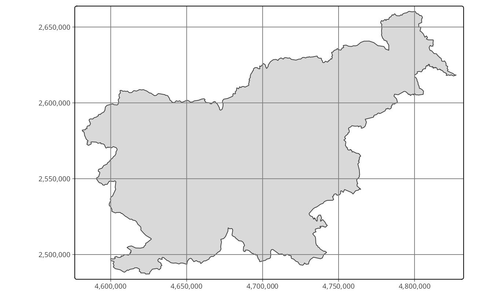
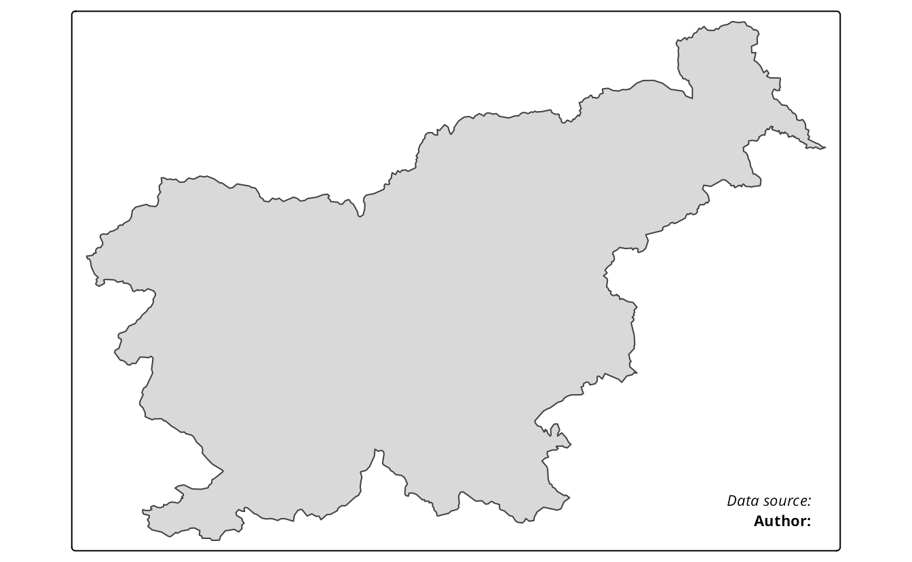
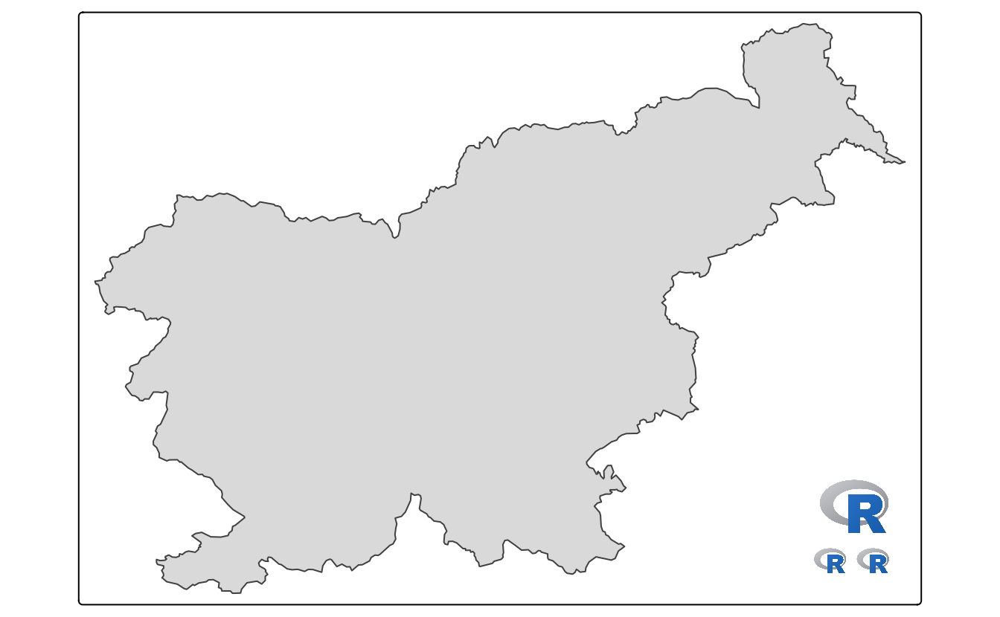

8 Layout
8.1 Typography
The decision about the used fonts is often neglected when creating programmable plots and maps. Most often, the default fonts are used in these kinds of graphs. This, however, could be a missed opportunity. A lot of map information is expressed by text, including text labels (Section 5.4), legend labels, text in attribute layers (Section 8.2), or the map title (Section 8.3). The used fonts impact the tone of the map (Guidero 2017), and their customization allows for a map to stand out from maps using default options.
As we mentioned above, many different map elements can be expressed or can use fonts. In theory, we are able to set different fonts to each of them. However, this could result in a confusing visual mix that would hinder our map information. Therefore, the decision on the used fonts should be taken after considering the main map message, expected map audience, other related graph styles, etc. In the following three sections, we explain font families and font faces, and give some overall tips on font selections, show how to define used fonts, and how to customize fonts on maps.
8.1.1 Font families and faces
In tmap, fonts are represented by a font family (Figure 8.1 A) and a font face (Figure 8.1 B). A font family is a collection of closely related lettering designs. Examples of font families include Times, Helvetica, Courier, Palatino, etc. On the other hand, font faces, such as italic or bold, influence the orientation or width of the fonts. A font is, thus, a combination of a selected font family and font face.
There are a few general font families, such as serifs, sans serifs, and monospaced fonts. Fonts from the serif family have small lines (known as a serif) attached to the end of some letters. Notice, for example, short horizontal lines on the bottom of letters r, i, and f or vertical lines at the ends of the letter s in the top row of Figure 8.1 A. The fonts in this family are often viewed as more formal. On the other hand, the sans serif family do not have serifs and is considered more informal and modern. The last font family, monospaced fonts, is often used in computer programming (IDEs, software text editors), but less often on maps. A distinguishing feature of the monospaced fonts is that each letter or character in this family has the same width. Therefore, letters, such as i and a will occupy the same space in the monospaced fonts.
Mixing the use of serif and sans serif fonts often works well for maps. However, a rule of thumb is not to mix more than two font families on one map. A sans serif font can be used to label cultural objects, while serif fonts to label physical features. Then, italics, for example, can be used to distinguish water areas. The role of bold font faces, together with increased font size, is to highlight the hierarchy of labels - larger, bold fonts indicate more prominent map features. Additionally, customizing the fonts’ colors can be helpful to distinguish different groups of map objects.
The decision on which fonts to use should also relates to the expected map look and feel. Each font family has a distinct personality (creates a “semantic effect”), which can affect how the map is perceived. Some fonts are more formal, some are less. Some fonts have a modern look, while others look more traditional. Another important concern is personal taste or map branding. We should filter the decision about the used fonts based on our preferences or even our sense of beauty as it could create more personal and unique maps. We just need to remember about the readability of the fonts - they should not be too elaborate as it can hinder the main map message.
8.1.2 Fonts available in tmap
Before we discuss how to set a font family and its face, it is important to highlight that a different set of fonts could exist for each operating system (and even each computer). Additionally, which fonts are available and how they are supported depends on the used graphic device. A graphic device is a place where a plot or map is rendered. The most commonly it is a some kind of a screen device, where we can see our plot or map directly after running the R code. Other graphic devices allow for saving plots or maps as files in various formats (e.g., .png, .jpg, .pdf). Therefore, it is possible to get different fonts on your map on the screen, and a (slightly) different one when saved to a file. Visit ?Devices or read the Graphic Devices chapter of Peng (2016) to learn more about graphic devices.
The tmap package has two mechanism to select a font family. The first one is by specifying on of three general font families - serif, sans, or monospace. It tries to match selected general font family with a font family existing on the operating system. For example, serif could the Times font family, sans - Helvetica or Arial, and monospace - Courier (Figure 8.1 A). The second mechanism allows to select a font family based on its name (e.g., Times or Palatino). Next, a member of the selected font families can be selected with one of the font faces: plain, italic, bold, and bold.italic (Figure 8.1 B).
As mentioned before, available fonts depend on the computer setup (including operating system) and used graphic device. Fonts available on the operating system can be checked with the system_fonts() function of the systemfonts package (Pedersen, Ooms, and Govett 2021) (result not shown).
Information on installing and debugging custom fonts can be found in a blog post by June Choe and in the showtext package (Qiu and See file AUTHORS for details. 2021) documentation.
The next step is to either view or save the map. This also means that we need to carry over our fonts to the output window/file, which largely depends on the selected graphic device. In general, screen device or graphical raster output formats, such as PNG, JPEG, or TIFF, works well with custom fonts as they rasterize them during saving. In case of any problems with graphical raster outputs, it is possible to try alternative graphics devices implemented in the ragg package (Pedersen and Shemanarev 2021). On the other hand, graphical vector formats, such as PDF or SVG, could have some problems with saving maps containing custom fonts1. The PDF device in R, by default, adds metadata about the used fonts, but does not store them. When the PDF reader shows the document, it tries to locate the font on your computer, and use other fonts when the expected one does not exist. An alternative approach is called embedding, which adds a copy of each necessary font to the PDF file itself. Gladly, the creation of a PDF with proper fonts can be achieved in a few ways. Firstly, it could be worth trying some alternative graphic devices such as cairo_pdf or svglite::svglite. The second option is to use the showtext package (Qiu and See file AUTHORS for details. 2021), which converts text into color-filled polygonal outlines for graphical vector formats. Thirdly, the extrafont (Chang 2014) package allows embedding the fonts in the PDF file, which makes PDFs properly displayed on computers that do not have the given font.
8.1.3 Fonts on maps
By default, tmap uses the sans font family with the plain font face (Figure 8.1). There are, however, three ways to customize the used fonts. The first one is to change all of the fonts and font faces for the whole map at once (Figure 8.2 A). This can be done with the fontfamily and fontface arguments of tm_layout().
tm_shape(ei_borders) +
tm_polygons() +
tm_shape(volcanos) +
tm_text(text = "name", size = "elevation") +
tm_credits("Data source: OSM") +
tm_title("Volcanos of Easter Island") +
tm_layout(fontface = "italic",
fontfamily = "serif")The second way is to specify just some text elements independently (Figure 8.2 B). Many tmap functions, such as tm_text() or tm_credits(), have their own fontfamily and fontface arguments that can be adjusted. Additionally, tm_layout() allows to customize fonts for other map elements using prefixed arguments, such as, main.title.fontface or legend.title.fontfamily.
tm_shape(ei_borders) +
tm_polygons() +
tm_shape(volcanos) +
tm_text(text = "name", size = "elevation", fontfamily = "sans") +
tm_credits("Data source: OSM", fontface = "bold") +
tm_title("Volcanos of Easter Island") +
tm_layout(title.fontface = "bold.italic",
legend.title.fontfamily = "monospace")#> [v3->v4] `tm_layout()`: use text.fontfamily instead of fontfamily
#> [v3->v4] `tm_layout()`: use text.fontface instead of fontface
The third way is to use a different tmap style - see section @ref() for more details.
8.2 Attributes layers
| Function | Description |
|---|---|
| tm_grid() | draws coordinate grid lines of the coordinate system of the main shape object |
| tm_graticules() | draws latitude and longitude graticules |
| tm_scalebar() | adds a scale bar |
| tm_compass() | adds a compass rose |
| tm_credits() | adds a text annotation |
| tm_logo() | adds a logo |
| tm_xlab() | adds an x axis labels |
| tm_ylab() | adds an y axis labels |
| tm_minimap() | adds minimap in the view mode only |
For the examples in this section, we will use a simple map of the Easter Island polygon (not shown).
tm = tm_shape(ei_borders) +
tm_polygons()
tm8.2.1 Grid lines
The tmap package offers two ways to draws coordinate lines - tm_grid() and tm_graticules(). The role of tm_grid() is to represent the input data’s coordinates. For example, the ei_borders object’s CRS is UTM zone 12S with the units in meters (Figure 8.3 A).
tm_shape(ei_borders) +
tm_polygons() +
tm_grid()tm_graticules() shows longitude lines (meridians) and latitude lines (parallels), with degrees as units. This can be seen with the degree signs in the labels (Figure 8.3 B).
tm_shape(ei_borders) +
tm_polygons() +
tm_graticules()Both, tm_grid() and tm_graticules() can be placed above or below the map layers as their position on the map depends on their place in the code. When tm_grid() or tm_graticules() is placed after the map layer (e.g., tm_polygons()), the grid lines are plotted on the top of the map. On the other hand, when tm_grid() or tm_graticules() is placed before the map layer code, the grid lines are plotted behind the spatial data (Figure 8.3 C).
tm_shape(ei_borders) +
tm_graticules() +
tm_polygons()Grids and graticules can also be easily customized using several arguments, such as, x and y (x and y coordinates of the lines), n.x and n.y (number of horizontal (x) and vertical (y) lines), labels.inside.frame, ticks, lines It is also possible to customize their appearance, for example, by changing the colors of the lines (col), width (lwd) or labels’ sizes (labels.size).

8.2.2 Scale bar
Scale bar is a graphic indicator of the relation between a distance on a map and the corresponding distance in the real world. Nowadays, it is more often used than a traditional representative fraction (e.g., 1:10000). Compared to the representative fraction, scale bars work correctly on variable screen sizes or different print sizes, as their sizes change together with the rest of the map.
The tm_scalebar() function adds a scale bar. By default, it tries to create a scale bar with the width of 1/4 of the whole map, and fills it with several breaks. It is possible, however, to manually update the values of scale bar’s breaks with the breaks argument and its size with the text.size argument (Figure 8.4).
tm +
tm_scalebar()
# tm_scalebar(breaks = c(0, 1, 2), text.size = 1)
The tm_scalebar() also has several additional arguments, allowing to modify its colors, and position (Section 8.2.3).
Importantly, the scale bar is accurate, depending on a map projection, at standard points or lines only (Section 2.4.4) - it is never completely correct across the whole map. The scale bar distortion increases with the true size of the area we are mapping - it is less visible on local maps, and very prominent on global maps. For example, try to add a scale bar to a world map seen in the Section 4.1. The created scale bar will be accurate for the equator, but less and less correct going to the north and south poles.
8.2.3 North arrow
North arrow, also known as a map compass or a compass rose, is a prominent orientation indicator pointing to which way is north2. The decision on whether to use north arrows or not usually requires some critical thinking. While, it can be added to every map, north arrows are not always necessary - especially on maps of large areas (e.g., continents), where the cardinal directions are obvious for most people. The North arrow is, however, necessary when the north on the map is offset (rotated) and recommended when we want to help orient the map readers.
We can use the tm_compass() function to add the north arrow. By default, its “north” is oriented toward the top of the map (the north argument of 0), and the north arrow is represented by an actual arrow (the type argument of "arrow"). tmap offers also a few other north arrow types, including "4star" (Figure 8.5), "8star", "radar", and "rose". The north arrow can be also further customized with the size, show.labels and cardinal.directions arguments, and its colors may be modified (text.color, color.dark, color.light) (Figure 8.5).
tm +
tm_compass(type = "4star", size = 2, position = c("left", "top"))
The location of the north arrow, by default, is placed automatically, but can also be changed using the position argument. It expects a vector of two values, specifying the x and y coordinates. The x coordinate can be set with "left", "LEFT", "center", "right", or "RIGHT", while the y coordinate uses "top", "TOP", "center", "bottom", or "BOTTOM". The arguments with all letters uppercase result in a position closer to the map frame (without margins). Alternatively, position can be specified with numeric values between 0 and 1 representing the x and y value of the left bottom corner of the north arrow.
The position argument also works in the same way in other functions, such as tm_scalebar(), tm_credits(), tm_logo(), and in some of the tm_layout() arguments - legend.position, title.position, or attr.position.
8.2.4 Text annotation
Text annotations, also known as map credits, are used to store additional information about the created map. They can include the source of data, the name of the author, the date of map creation, or information about the map projection.
Text annotations are created with the tm_credits() function, which can be used more than one time (Figure 8.6).
tm +
tm_credits("Data source: ", fontface = "italic") +
tm_credits("Author: ", fontface = "bold")

The first argument of tm_credits() is the text, which can be spread over multiple lines with the line break symbol \n. When the created map has several facets (Chapter 10), it is also possible to provide each facet a different text. In that case, a vector of characters is expected, where you can use "" to omit the credits for specific facets. Text annotations can also be further customized, by changing their sizes (size), colors (color), positions, and fonts (Section 8.1.3).
8.2.5 Logo
Logos on maps can serve a similar purpose as text annotation or accompany them. They can represent your affiliation, funding institution, data sources logos, etc.
The tm_logo() function adds png images, either from a file or url, to the map (Figure 8.7).
tm +
tm_logo("https://www.r-project.org/logo/Rlogo.png",
height = 2) +
tm_logo(c("https://www.r-project.org/logo/Rlogo.png",
"https://www.r-project.org/logo/Rlogo.png"),
height = 1)

There are two ways to use multiple logos. Many tm_logo() functions will places logos on top of each other, while providing a vector of png files will show them next to each other. Additional arguments include the height of the logo (height, the width is scaled automatically) and its position (position).
8.2.6 Axis labels

8.2.7 Minimap
tmap_mode("view")
#> ℹ tmap mode set to "view".tm +
tm_minimap()tmap_mode("plot")
#> ℹ tmap mode set to "plot".8.3 Layout elements
You can get the
invalid font typeerror when saving the file.↩︎Orientation may also be shown by graticule or grid lines (Section 8.2.1).↩︎